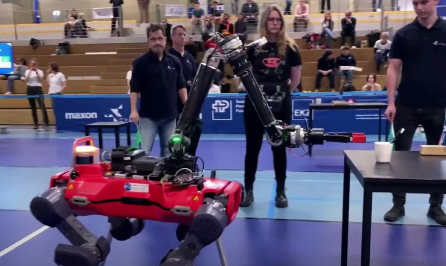
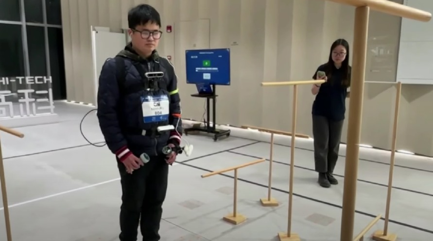
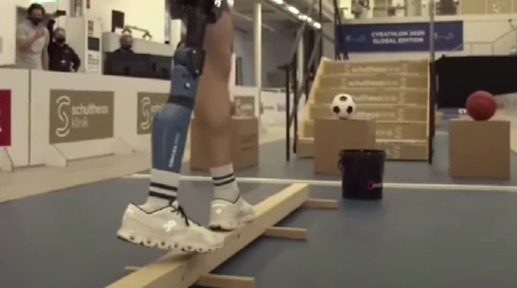
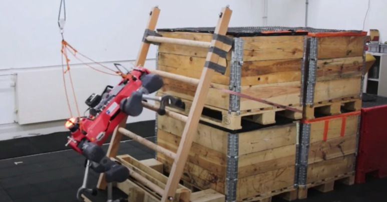
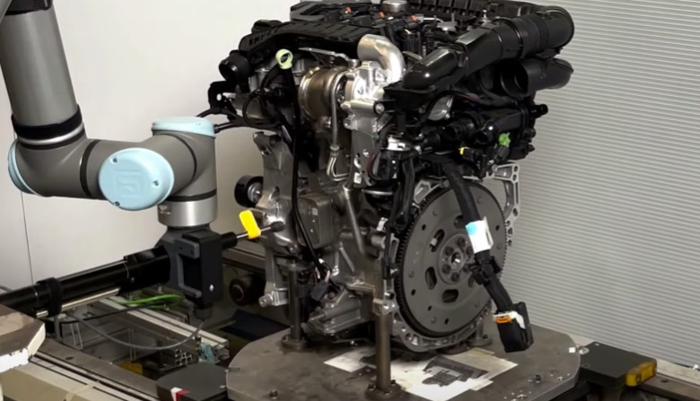
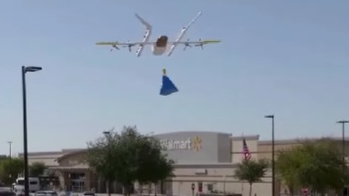
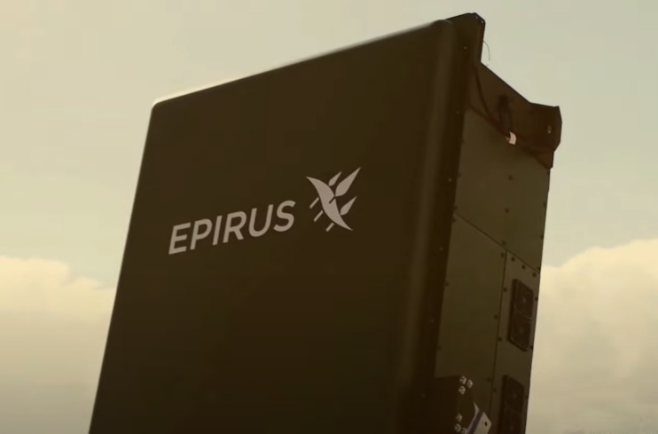
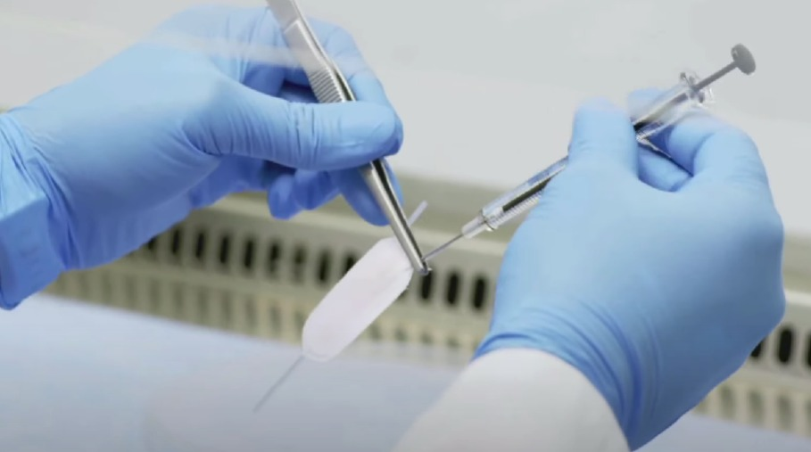

Cybathlon
El Cybathlon es un evento internacional que reune a personas con discapacidades físicas y las pone a prueba en desafios de la vida diaria con la ayuda de tecnologías de punta.

Las nuevas tecnologías han transformado significativamente la vida de las personas con discapacidades físicas mejorando su calidad de vida. Dispositivos como prótesis avanzadas y sillas de ruedas eléctricas permiten una mayor movilidad y autonomía. En el ámbito de la automatización, herramientas como la inteligencia artificial y robots colaborativos optimizan tareas en el trabajo, brindando apoyo a quienes tienen limitaciones físicas. Además, en la medicina, innovaciones que están revolucionando la forma en que se diagnostican y tratan enfermedades, ofreciendo soluciones mucho más accesibles.
El Cybathlon es un evento internacional que reune a personas con discapacidades físicas y las pone a prueba en desafios de la vida diaria con la ayuda de tecnologías de punta.
El ANYMal es un robot cuadrupedo que es controlado por un piloto paraplejico utilizando un joystick que opera con la boca. Este robot le permite realizar tareas comunes como abrir puertas o sostener una manzana.
Esta máquina fue creada para ayudar a personas que no pueden ver. Usa cámaras que mandan información a una computadora y le devuelve instruccines de audio guiandolo en tiempo real.
Las personas que utilizan prótesis no pueden sentir el suelo bajo sus pies lo que dificulta la locomoción. La prótesis que lleva tiene una plantilla con sensores que recopilan información sobre como el pie protésico interactua con el suelo. Estimula eléctricamente en muñon de la pierna simulando la sesancíon de tocar el suelo con la planta del pie.
Un robot maestro fue entrenado con datos completos y luego varios robots alumnos aprendieron a imitar este comportamiento. El robot maestro fue puesto a prueba subir escaleras en diversas situaciones para desarrollar habilidades de escalada altamente eficientes.
Es un brazo robótico con una cámara de orientación indepeniente 3D permitiendo que los robots vean y ajusten sus movimientos de manera denamica. Pueden ajustar sus trayectorias en tiempo real identificando la posición exacta de piezas de trabajo, escencial para tareas de presición.
Son drones con la capacidad de entregar pedidos en el hogar. Ayudan a que las empresas se ahorren en infraestrucctura para ampliar sus servivios y que puedan hacer más fáciles sus entregas.
Sistema de microondas de alta potencia capaz de neutralizar multiples de drones al mismo tiempo utilizada por los marines de los EE.UU. El "Leonidas" permite revolucionar la defensa contra drones.
Microbots capaces de navegar dentro del cuerpo humano con presición con el objetivo de realizar una micro cirujía endoscopiaca. Estos TrainBots fueron creados para enfrentar desafios médicos como la administración de medicamentos y la realización de procedimientos quirurjicos en áreas de difícil acceso.
Es un tratamiento que utiliza células madre cultivadas a partir de las propias células madre de la paciente quitando su dependencia de insulina. Esto fue usado contra la diabetes tipo 1.
